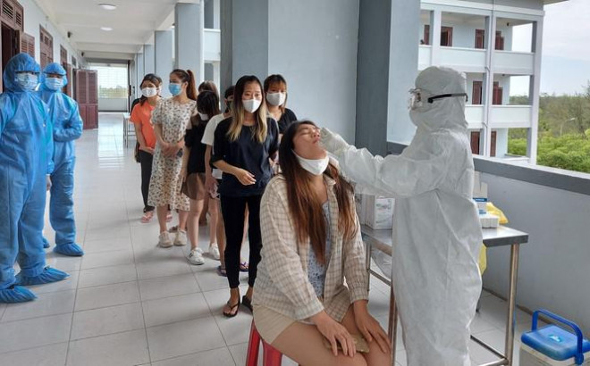
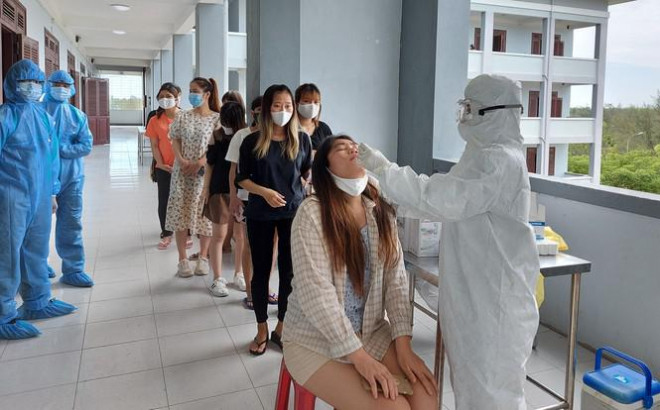

Thứ Bảy, ngày 30/05/2020 17:28 PM (GMT+7)
Sáng 30/5, PV Tiền phong có mặt tại Khu cách ly Trường Trung cấp Cảnh sát nhân dân V
(xã Bình Phục
, huyện Thăng Bình, Quảng Nam)
nơi vừa tiếp nhận 343 công dân Việt Nam từ Đài Loan về, trong đó có
243 phụ nữ mang thai.

Đại tá Nguyễn Quyết Chiến – Phó Tham mưu trưởng Bộ Chỉ huy quân sự tỉnh Quảng Nam,
chỉ huy Khu
cách ly trường Trung cấp Cảnh sát nhân dân 5, cho biết hiện tại đơn vị đã
tiếp nhận 343 công dân về từ
Đài Loan. Trong số đó có 243 phụ nữ mang thai, 1 công dân bị tai biến.
Ngoài ra, có 1 trường hợp bị ung
thư tụy đã bố trí đến điều trị tại Bệnh viện Ung bướu Đà Nẵng.

Qua nắm thông tin ban đầu, các công dân này đến từ nhiều tỉnh, thành trong cả nước. Trong số các bà bầu đang cách ly tại đây có người mang bầu 7 – 8 tháng do đó lực lượng nhân viên y tế được tăng cường, nhân viên y tế chuyên khoa sản túc trực để đảm bảo chăm sóc sức khỏe và các phương án hộ sinh.
Nhiều bà bầu không giấu được cảm xúc vui mừng khi được trở về Việt Nam, không còn nỗi lo phải một mình “vượt cạn” ở xứ người.

Chị Phạm Thị Kiều (33 tuổi, quê ở Thái Bình) mang bầu bé g ái tháng thứ 6. Đứa con trai đầu của chị đã 14 tuổi hiện đang với ông bà nội. Cả hai vợ chồng sang làm công nhân cho một công ty bên Đài Lo an đến nay được 8 năm. “Về được đến đây vui quá đi, không còn lo lắng nữa. Sợ phải đẻ bên xứ người rồi không có người thân chăm. Từ hôm nghe thông tin được về quê, mình vui không tả nỗi. Bình thường cứ lên tàu xe máy bay là nôn ói mà nay vui quá bay cả chặng dài không thấy mệt” – chị Kiều nói.
 


Ngay sau khi xuống sân bay, lực lượng y tế đã thực hiện khám sàng lọc, kiểm tra y tế cho các công dân. Đến khoảng 18h, các công dân di chuyển ra xe buýt được tỉnh Quảng Nam bố trí để đi đến khu cách ly tại Trường Trung cấp Cảnh sát nhân dân 5 (xã Bình Phục, huyện Thăng Bình, Quảng Nam).


Lực lượng chức năng Quảng Nam tiến hành tiếp nhận, cách ly toàn bộ số công dân trên. Ngay trong đêm 29/5, sau khi thực hiện các biện pháp tiê u độc khử trùng, đo thân nhiệt và khai báo y tế, các công dân đã được bố trí n i ăn ở, ngủ nghỉ, sinh hoạt một cách chu đáo. Trong thời gian cách ly 14 ngày, mỗi công dân được đảm bảo chế độ tiêu chuẩn là 80 nghìn đồng/ngày và các nhu y ếu phẩm khác, vật dụng thiết yếu là 40 nghìn đồng/ngày.